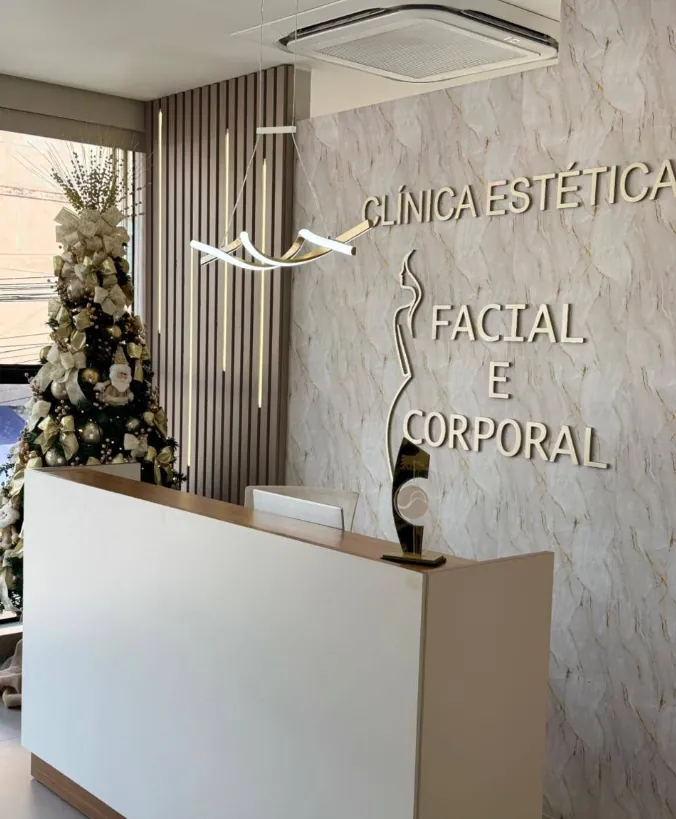

Espera Feliz · MG Eleita a melhor clínica de estética de 2025
Sua beleza, realçada.
Não transformada.
Harmonização facial, criolipólise, estrias, drenagem e sobrancelhas, com avaliação antes de qualquer procedimento. Duas especialistas, uma clínica pertinho de você.
- Facial e corporal
- Consulta online
- Centro de Espera Feliz

Antes de qualquer procedimento, uma avaliação: você conta o que incomoda, a gente mostra o caminho.
- Harmonização facial
- CrioModel
- Preenchimento labial
- Estrias
- Drenagem linfática
- Mento
- Jato de plasma
- Gordura localizada
- Sobrancelhas
- Flacidez
- Consulta online
- Melhor clínica de estéticade Espera Feliz · 2025
- 5,0 no Google3 avaliações
- Espera Feliz e regiãoCaiana, Alvarenga, Divino
- Consulta onlinepara quem mora longe
Tratamentos
O que você quer cuidar?
Toque no tratamento: a mensagem para agendar a avaliação já vai pronta no WhatsApp, com o nome de quem faz.
Por onde começar
Não sabe qual procedimento procurar?
Responda três perguntas. No fim, você vê com quem falar e a mensagem já sai escrita.
A indicação é só um ponto de partida. O plano final é definido na avaliação.
Carregando as perguntas…
Equipe
Quem vai cuidar de você
Cada uma com a sua sala, a sua especialidade e o mesmo cuidado: avaliar antes de indicar.
Resultados
Resultados com direção
Cada caso começa com avaliação. Veja alguns tratamentos feitos aqui.
Resultados variam de pessoa para pessoa. Imagens publicadas com autorização das clientes. [confirmar se o conselho profissional delas permite antes e depois no site, e em quais condições]
Quero avaliar o meu casoEvento
Chá Autoestima
Um encontro para falar de cuidado, beleza e autoestima.
A clínica
Pensada para você se sentir bem antes mesmo do procedimento
Salas individuais
Cada especialista com o seu espaço, do jeito dela.
Avaliação primeiro
Nenhum procedimento sem entender o seu caso.
Tecnologia
Criolipólise 360° e equipamentos atualizados. [nomes dos aparelhos]
Café na espera
Um cantinho do café enquanto você aguarda.
Avaliações
O que as clientes dizem
[depoimento 1: texto real de uma cliente, com autorização]
[depoimento 2]
[depoimento 3]
2025
Eleita a melhor clínica de estética de Espera Feliz em 2025
[quem promoveu a premiação e como foi a escolha]
Consulta online
Mora em outra cidade? Comece por aqui.
Na consulta online você tira dúvidas, entende o que faz sentido para você e já chega na clínica com o plano pronto. Ideal para quem mora em Caiana, Alvarenga, Divino ou tem a rotina corrida.
Quero a consulta onlineA avaliação é paga?
[valor da avaliação, ou "a avaliação é gratuita"]
Dá para parcelar?
[formas de pagamento e em quantas vezes]
Dói?
[como é a sensação em cada procedimento, nas palavras delas] Na avaliação você tira essa dúvida para o seu procedimento.
Quantas sessões são necessárias?
Depende da avaliação. Cada caso tem um plano, e o número de sessões sai dele, não de uma tabela pronta.
Atendem quem não é de Espera Feliz?
Sim. A clínica atende Espera Feliz, Caiana, Alvarenga, Divino e cidades vizinhas. Se a distância pesa, dá para começar pela consulta online.
Como funciona a consulta online?
Você conversa com a Grazi ou com a Amanda [por vídeo ou por chamada? quanto dura? é paga?], tira as dúvidas e entende o que faz sentido para o seu caso. Quando vier à clínica, o plano já está pronto.
Tem estacionamento perto?
[onde estacionar no Centro]